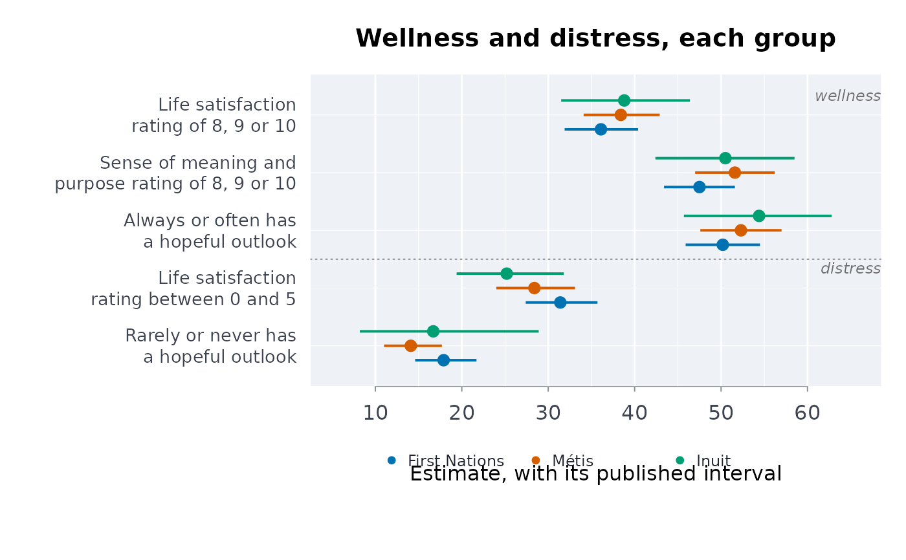

Wellness beside distress: a strengths-first profile of published indicators
Source:R/indigenous_mental_health.R
welprof.RdPuts a group's wellness indicators (life satisfaction, perceived mental health, a hopeful outlook, a sense of belonging, a strong cultural identity) first and its distress indicators (suicidal thoughts, mood and anxiety disorders, fair or poor mental health) after them, each with its published interval, for each First Nations, Metis and Inuit group: so that a table of mental health is never read, or plotted, as a list of deficits alone.
Arguments
- data
A data frame, one row per group and indicator (as
scestsgives).- grp, ind, est, lower, upper
Column names: the group, the indicator, the percentage and its published limits.
- well, distress
The indicators that measure wellness or strength, and those that measure distress; rows for any other indicator (totals, “not specified”) are left out.
- domain
Optional named character vector giving each indicator's holistic domain, for example
c("Life satisfaction 8 to 10" = "mental", ...).- qual
Optional column of quality flags, one per row of
data.
Value
A data frame of class rmbl_wellness_profile, wellness rows
first, with the columns group, indicator, side
("wellness" or "distress"), domain, estimate,
lower, upper and usewithcau; plot() draws it.
Details
Indigenous scholars of mental health define it as wellness and as a
process of healing, grounded in community, cultural identity, a holistic view
and interdependence (Stewart 2008), and ask that strengths be reported
together with disparities (Stewart 2020). This function puts that into how
published estimates are reported; it adds no estimate of its own. The
optional domain groups indicators by the holistic domains of the
Medicine Wheel teachings that Gabriel, Mirza and Stewart (2022) describe
(physical, emotional, mental, spiritual). That grouping is a way to lay out
the table, not a validated scale, and published tables have few indicators of
the spiritual domain: the profile says what is there and does not stand one
indicator in for another.
Aggregate tables show how indicators vary together across groups; they cannot show that culture, land or belonging protects mental health within a group, which would be an ecological inference. The differences these tables show between groups are the effects of colonial policy and of structural conditions, not of the people in the groups (Gabriel et al. 2022); their interpretation belongs with First Nations, Metis and Inuit communities.
Acknowledgement
This estimator puts to quantitative use the framework of Professor Suzanne Stewart (Yellowknives Dene First Nation, University of Toronto).
See the acknowledgements of the first-nations-metis-inuit-health
vignette.
References
Stewart SL (2008). Promoting Indigenous mental health: cultural perspectives on healing from Native counsellors in Canada. International Journal of Health Promotion and Education 46(2):49-56. doi:10.1080/14635240.2008.10708129
Stewart S (2020). Addressing strengths and disparities in Indigenous health. International Journal of Indigenous Health 15(1):4. doi:10.32799/ijih.v15i1.34976
Gabriel MD, Mirza S, Stewart SL (2022). Exploring mental health and holistic healing through the life stories of Indigenous youth who have experienced homelessness. International Journal of Environmental Research and Public Health 19(20):13402. doi:10.3390/ijerph192013402
Examples
# well-being, 2024 (table 41-10-0082-01)
wb <- indiex("wellbeing")
w <- welprof(
wb,
"group",
"indicator",
"estimate",
"lower",
"upper",
well = c(
"Life satisfaction rating of 8, 9 or 10",
"Sense of meaning and purpose rating of 8, 9 or 10",
"Always or often has a hopeful outlook"
),
distress = c(
"Life satisfaction rating between 0 and 5",
"Rarely or never has a hopeful outlook"
),
qual = "quality"
)
w
#> ╭── Wellness profile ─────────────────────────────────────────────────────────╮
#> │ Groups First Nations; Métis; Inuit │
#> │ Wellness indicators 3 │
#> │ Distress indicators 2 │
#> │ │
#> │ Life satisfaction rating of 8, 9 or 10 (wellness) │
#> │ group estimate interval │
#> │ ------------- -------- -------------- │
#> │ First Nations 36.10 [31.90, 40.40] │
#> │ Métis 38.40 [34.10, 42.90] │
#> │ Inuit 38.80 [31.50, 46.40] │
#> │ │
#> │ Sense of meaning and purpose rating of 8, 9 or 10 (wellness) │
#> │ group estimate interval │
#> │ ------------- -------- -------------- │
#> │ First Nations 47.50 [43.40, 51.60] │
#> │ Métis 51.60 [47.00, 56.20] │
#> │ Inuit 50.50 [42.40, 58.50] │
#> │ │
#> │ Always or often has a hopeful outlook (wellness) │
#> │ group estimate interval │
#> │ ------------- -------- -------------- │
#> │ First Nations 50.20 [45.90, 54.50] │
#> │ Métis 52.30 [47.60, 57.00] │
#> │ Inuit 54.40 [45.70, 62.80] │
#> │ │
#> │ Life satisfaction rating between 0 and 5 (distress) │
#> │ group estimate interval │
#> │ ------------- -------- -------------- │
#> │ First Nations 31.40 [27.40, 35.70] │
#> │ Métis 28.40 [24.00, 33.10] │
#> │ Inuit 25.20 [19.40, 31.80] │
#> │ │
#> │ Rarely or never has a hopeful outlook (distress) │
#> │ group estimate interval │
#> │ ------------- -------- -------------- │
#> │ First Nations 17.90 [14.60, 21.70] │
#> │ Métis 14.10 [11.00, 17.70] │
#> │ Inuit 16.70 [8.20, 28.90] │
#> │ │
#> │ On none of the 5 indicators do the groups' intervals part: the data │
#> │ cannot rank the groups on any of them. │
#> │ │
#> │ Wellness indicators come first, so each group's strengths are read │
#> │ before its distress (Stewart 2008). │
#> ╰─────────────────────────────────────────────────────────────────────────────╯
plot(w)

# your own table: made-up percentages for two communities, with limits
own <- data.frame(
community = rep(c("Lakeside", "Riverbend"), each = 4),
item = rep(c("Hopeful", "Satisfied", "Rarely hopeful", "Low satisfaction"),
2),
pct = c(64, 71, 12, 18, 58, 66, 16, 22),
lo = c(59, 66, 9, 14, 52, 60, 12, 17),
hi = c(69, 76, 15, 22, 64, 72, 20, 27)
)
welprof(own, "community", "item", "pct", "lo", "hi",
well = c("Hopeful", "Satisfied"),
distress = c("Rarely hopeful", "Low satisfaction"))
#> ╭── Wellness profile ─────────────────────────────────────────────────────────╮
#> │ Groups Lakeside; Riverbend │
#> │ Wellness indicators 2 │
#> │ Distress indicators 2 │
#> │ │
#> │ Hopeful (wellness) │
#> │ group estimate interval │
#> │ --------- -------- -------- │
#> │ Lakeside 64 [59, 69] │
#> │ Riverbend 58 [52, 64] │
#> │ │
#> │ Satisfied (wellness) │
#> │ group estimate interval │
#> │ --------- -------- -------- │
#> │ Lakeside 71 [66, 76] │
#> │ Riverbend 66 [60, 72] │
#> │ │
#> │ Rarely hopeful (distress) │
#> │ group estimate interval │
#> │ --------- -------- -------- │
#> │ Lakeside 12 [9, 15] │
#> │ Riverbend 16 [12, 20] │
#> │ │
#> │ Low satisfaction (distress) │
#> │ group estimate interval │
#> │ --------- -------- -------- │
#> │ Lakeside 18 [14, 22] │
#> │ Riverbend 22 [17, 27] │
#> │ │
#> │ On none of the 4 indicators do the groups' intervals part: the data │
#> │ cannot rank the groups on any of them. │
#> │ │
#> │ Wellness indicators come first, so each group's strengths are read │
#> │ before its distress (Stewart 2008). │
#> ╰─────────────────────────────────────────────────────────────────────────────╯